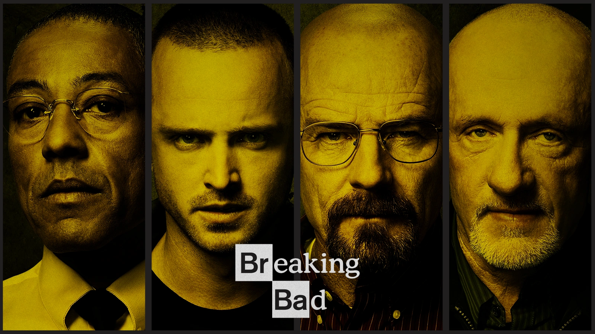

¿Como surgió?

Breaking Bad surgió de la mente del guionista y
productor Vince Gilligan, quien concibió la idea de la serie con la intención
de explorar la transformación radical de un personaje. Gilligan quería crear
un protagonista que pasara de ser "Mr. Chips" (un hombre común y bueno) a
"Scarface" (un criminal despiadado). Inspirado por la fascinante dualidad
entre el bien y el mal, desarrolló la historia de Walter White, un profesor
de química que, tras un diagnóstico de cáncer, decide fabricar metanfetamina
para asegurar el bienestar económico de su familia.
La serie fue producida por Sony Pictures Television y
estrenada originalmente en AMC el 20 de enero de 2008. A pesar de un comienzo
modesto en términos de audiencia, Breaking Bad ganó reconocimiento gracias a su
escritura, actuaciones excepcionales, y una narrativa intensa y compleja. El
boca a boca, junto con su disponibilidad en servicios de streaming como Netflix,
contribuyó a su éxito global, convirtiéndola en una de las series más aclamadas
y reconocidas en la historia de la televisión.
¿Que significado tiene los nombres y su
personalidad de los personajes de la serie breaking bad?
Walter White:

- El nombre "Walter White" fue elegido por Vince Gilligan para ser genérico,
representando a un hombre promedio, común y corriente. Su profesión inicial
como profesor de química subraya su inteligencia y talento subestimado,
mostrando cómo alguien con un conocimiento profundo puede usarlo para el
bien o para el mal. La transición al alias "Heisenberg" fue un guiño al
físico Werner Heisenberg, famoso por su principio de incertidumbre, lo
que simboliza la creciente imprevisibilidad y oscuridad del personaje.
Jesse Pinkman:

- Jesse originalmente iba a ser un personaje menor, pero su carisma y complejidad
lo convirtieron en un protagonista clave. Su apellido, "Pinkman," contrasta con
su vida oscura y caótica, mostrando una dualidad interesante. Su carrera como
cocinero de metanfetaminas amateur refleja su vida errática y su búsqueda de
identidad y propósito.
Skyler White:

- El nombre "Skyler" tiene un tono suave y familiar, acorde a su papel como esposa
y madre. Su trabajo como contadora refleja su personalidad práctica e inteligente,
además de su habilidad para adaptarse y gestionar situaciones complejas, como el
lavado de dinero.
Walter White Jr.:

- El nombre Walter White Jr. fue elegido para mostrar la conexión directa
con su padre, Walter White, reflejando el vínculo familiar. Su alias Flynn,
que adopta más tarde, simboliza su rechazo hacia su padre cuando comienza a
descubrir las actividades de Walter como Heisenberg. Cambiar su nombre a
Flynn representa una búsqueda de identidad independiente, destacando su
lucha emocional en medio de los conflictos familiares.
Hank Schrader:

- "Hank" es un nombre fuerte y enérgico, acorde con la personalidad extrovertida y
segura del cuñado de Walter. Su profesión como agente de la DEA establece un contraste
directo con las actividades ilegales de Walter, aumentando la tensión narrativa.
Marie Schrader:

- El nombre Marie es un nombre de origen francés que proviene de Maria, y suele
asociarse con personas cuidadosas, leales y protectoras. Esto encaja bien con
su papel como hermana menor de Skyler y como alguien que apoya a su esposo, Hank,
durante momentos difíciles. Su apellido, Schrader, refuerza su identidad como
parte de la familia que contrasta directamente con los White, subrayando las
diferencias en sus valores y perspectivas.
Saul Goodman:

- El nombre "Saul Goodman" es un juego de palabras ("It’s all good, man") que refleja
el carácter llamativo y astuto del abogado criminalista. Su profesión resalta su
capacidad para navegar entre los límites éticos del sistema legal y su habilidad
para conectar con el mundo criminal.
¿Por que el titulo breaking bad?
El nombre Breaking Bad proviene de una expresión coloquial
del sur de los Estados Unidos que significa "desviarse hacia el mal" o "alejarse
del camino correcto". Es una forma de describir a alguien que toma decisiones
moralmente cuestionables o que se adentra en un comportamiento peligroso o ilegal.
El título refleja perfectamente la transformación de Walter
White a lo largo de la serie, pasando de ser un profesor de química tranquilo y
ordinario a un despiadado capo del narcotráfico conocido como "Heisenberg". La
frase encapsula el tema principal de la serie: cómo las circunstancias y las
decisiones pueden empujar a una persona común hacia un camino oscuro e inesperado.
Es breve, impactante y lleno de significado, lo que lo convierte en un título memorable
y profundamente ligado a la historia.
Temas Principales
- Transformación y Poder: La serie examina cómo el poder puede corromper incluso
a las personas más ordinarias.
- Familia y Moralidad: Contrasta el deseo de proteger a la familia con las
decisiones éticamente dudosas.
- Crimen y Consecuencias: Explora los efectos devastadores del crimen en las vidas de todos los involucrados.